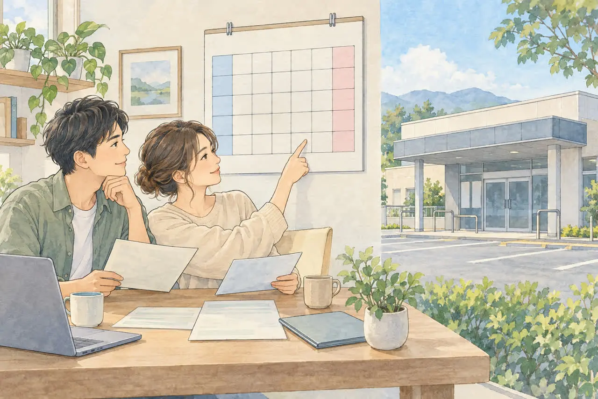
書類・手続き
廃車の手続きは土日にできる？窓口が休みでも進められること・進められないこと
廃車の窓口は土日・祝日は休みです。土日にできる準備、できないこと、オンライン（OSS）の注意点、平日に休めない方の進め方をご紹介します。
ARTICLES
廃車の準備や、こんな車でも大丈夫？という疑問にお答えする記事と、お知らせをまとめています。

書類・手続き
廃車の窓口は土日・祝日は休みです。土日にできる準備、できないこと、オンライン（OSS）の注意点、平日に休めない方の進め方をご紹介します。
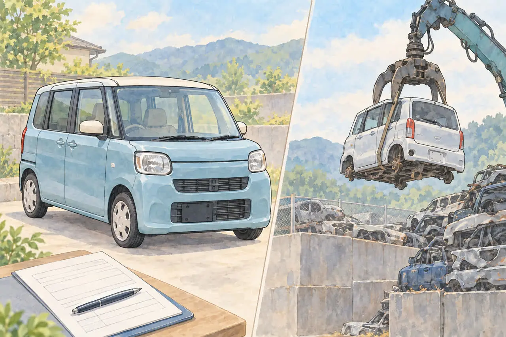
書類・手続き
軽自動車の一時使用中止と解体返納の違いを解説。解体するか、また乗るかで選び方が変わります。重量税の還付、軽自動車税、自賠責、先に一時使用中止にする場合までご紹介します。
書類・手続き
廃車や買取で使う委任状と譲渡証明書の書き方を解説。実印を押す欄、訂正のしかた、空欄の注意点、軽自動車の申請依頼書までご紹介します。
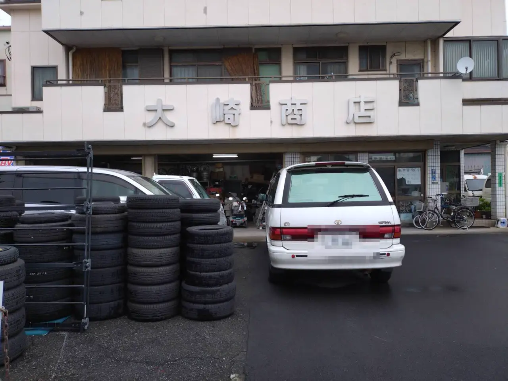
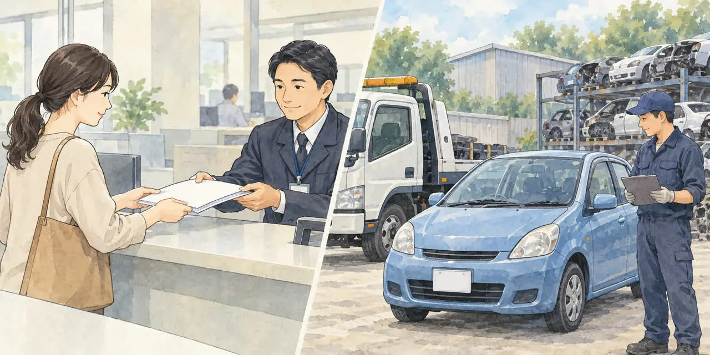
書類・手続き
一時抹消の登録識別情報等通知書、自賠責・任意保険、自動車税の還付通知など、廃車のあとに保管したい書類と使い道をご紹介します。
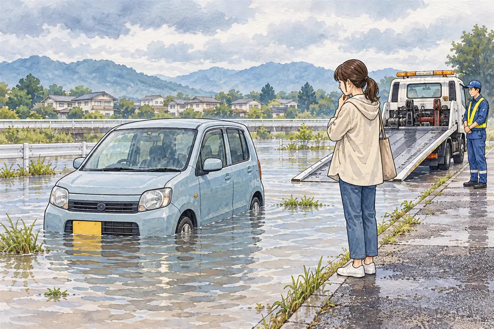
車の状態別
大雨・台風で水につかった車の安全な対応、保険・自動車税・重量税の考え方、廃車の手続き、大崎商店の引き取りをご紹介します。
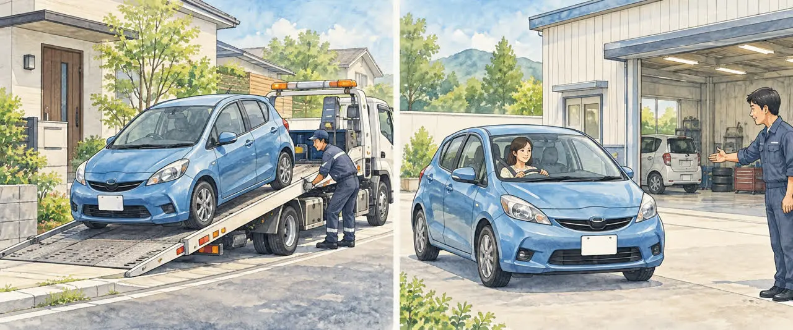
書類・手続き
券がなくても廃車はできます。自動車リサイクルシステムでの預託状況の確認と印刷、二重払いを防ぐポイントをご紹介します。
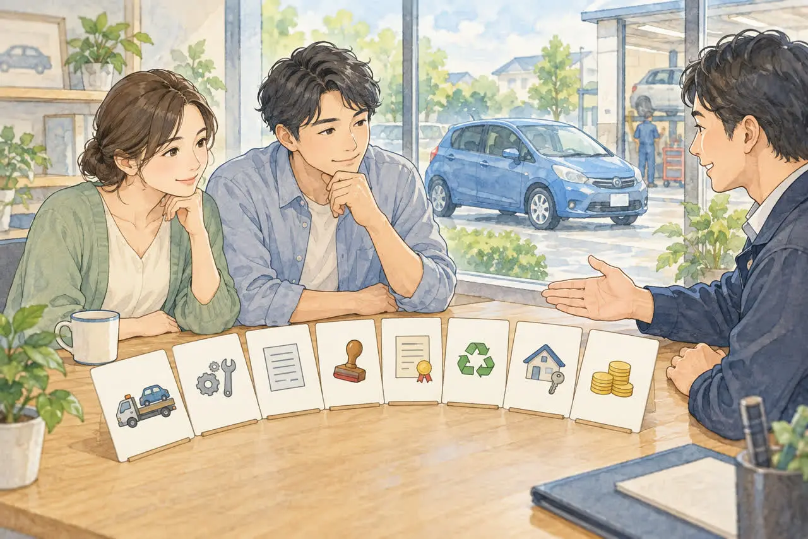
基本・流れ
廃車にかかることがあるお金、公式に金額が決まっているもの、見積もりで確認したいこと、大崎商店でかからないお金をご紹介します。
基本・流れ
足立区の窓口、都税と区の税の違い、印鑑証明書の取り方、引き取りから廃車までの流れをご紹介します。足立区内は引き取り無料。
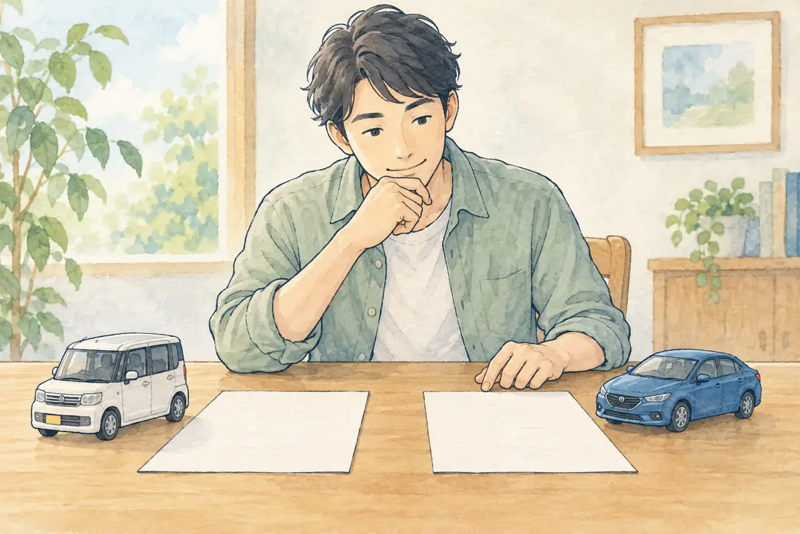
書類・手続き
軽自動車税は月割りで戻りません。普通車との違い、軽自動車でも戻る重量税・自賠責、3月中の廃車の考え方をご紹介します。
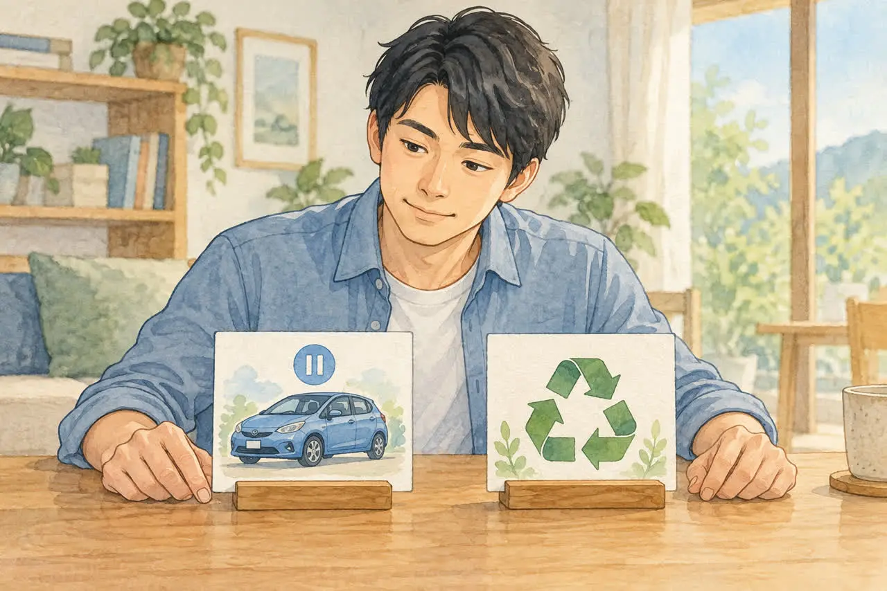


車の状態別
レッカーだけなら等級は下がらないのが一般的。保険金を請求したときの等級・事故有係数、修理か廃車かの判断、解約と中断証明書までご紹介します。


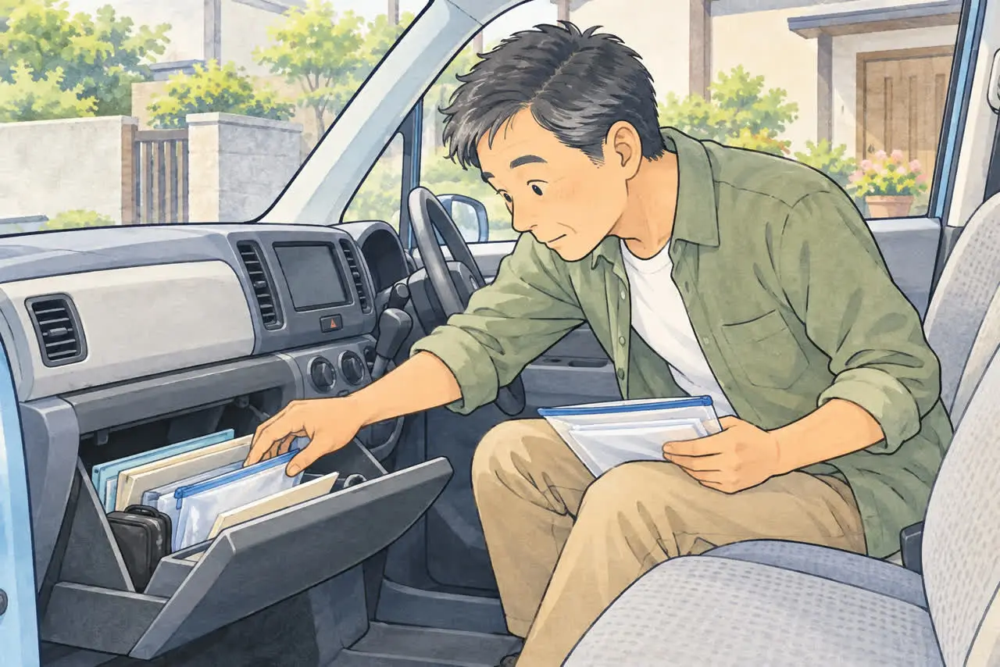
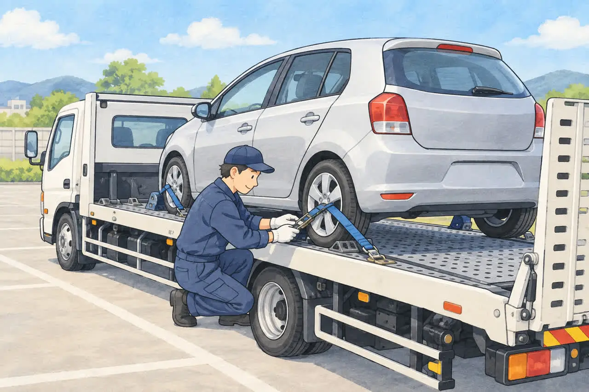
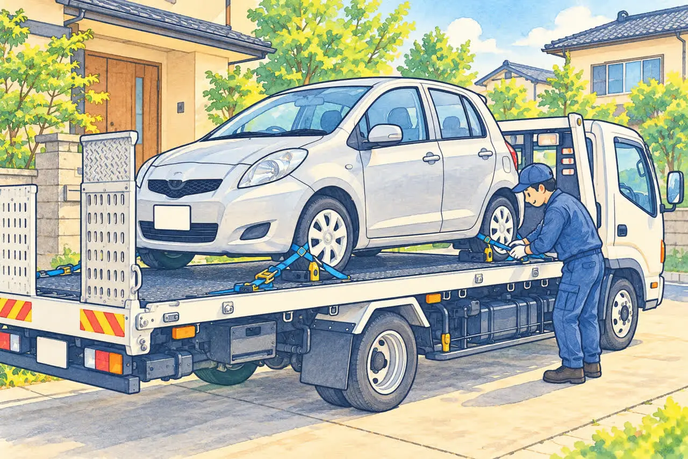
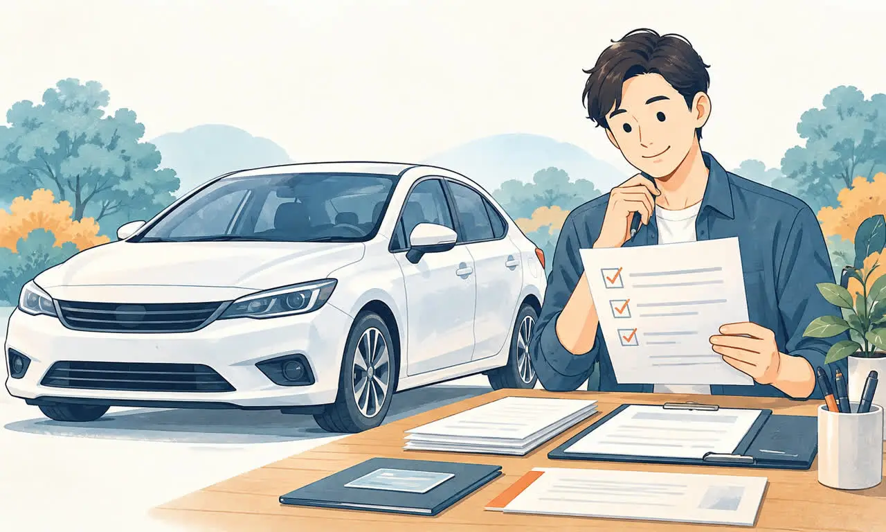
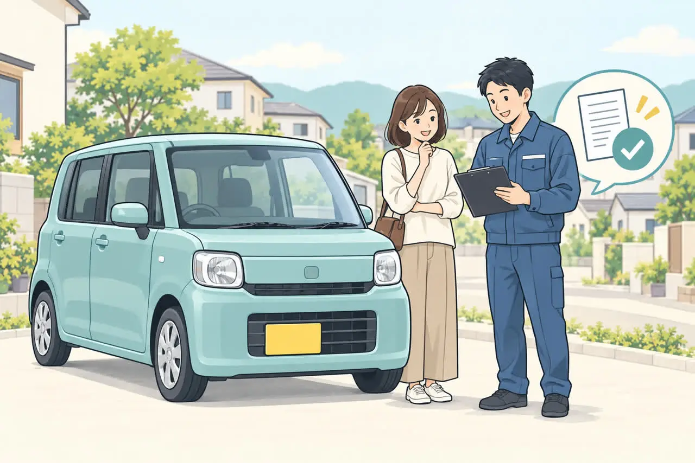
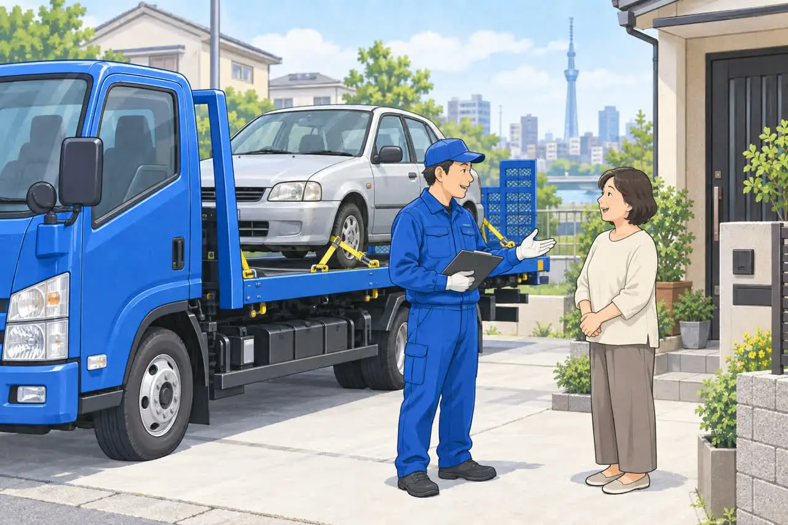
見つかりませんでした。別のキーワードや分類をお試しください。
CONTACT
記事に載っていないことも、お気軽にご相談ください。
☎ 03-3854-4141✉ メールで相談する環七店：月〜土 10:00〜18:00（日曜・祝日休業）／入谷店：月〜土 9:30〜17:30（日曜・祝日・第2土曜休業）